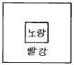
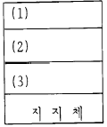
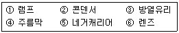

사진기능사 (2002-10-06 기출문제)
1과목: 사진일반
1. 정적이면서 차분한 효과를 얻을 수 있으며 특히 조용하며 침착한 환경의 색채관리에 효과적인 배색은?
- 난색계의 배색
- 한색계의 배색
- 난색과 무채색계의 배색
- 보색계의 배색
(정답률: 66%)

2. 광명, 팽창, 접근, 가치, 희망, 명랑 등을 연상하는 색상은?
- 노랑
- 청색
- 적색
- 백색
(정답률: 86%)
3. 컬러사진에 있어서 색채에 관한 설명 중 잘못된 것은?
- 피사체를 보다 사실적으로 재현할 수 있게 해 준다.
- 명도차가 큰 색끼리의 대조는 원근감을 상쇄시키는 효과를 낸다.
- 명도가 높은 색은 실제보다 면적이 넓게 보이는 효과가 있다.
- 명도가 낮은 색은 실제보다 후퇴하는 느낌을 준다.
(정답률: 71%)
4. 사진적 감색혼합의 결과로 올바른 것은?
- Cyan + Magenta = Green
- Yellow + Cyan = Blue
- Yellow + Magenta = Red
- Yellow + Magenta + Cyan = Blue
(정답률: 87%)
5. 그림에서 노랑색이 연두기미가 많은 노랑으로 보인다면 무슨 대비 현상 때문인가?

- 색상대비
- 보색대비
- 채도대비
- 명도대비
(정답률: 67%)
6. 컬러 사진에서 가장 변색이 잘 되는 색감은?
- Yellow
- Magenta
- Cyan
- Red
(정답률: 64%)
7. 카메라의 원리가 되는 카메라 옵스큐라는 피사체를 역상으로 보여주고 있는데 그 이유는?
- 빛의 직진성
- 렌즈의 굴절
- 빛의 회절
- 소구경 렌즈
(정답률: 62%)
8. 일반적으로 컬러인화지의 감광유제층 감도가 빠른 순서대로 나열된 것은?
- 청색감광유제층>녹색감광유제층>적색감광유제층
- 녹색감광유제층>청색감광유제층>적색감광유제층
- 적색감광유제층>청색감광유제층>녹색감광유제층
- 녹색감광유제층>적색감광유제층>청색감광유제층
(정답률: 65%)
9. 일광용 필름(Daylight type film)의 개략적인 색온도는?
- 3,200∼3,400K
- 7,000∼8,000K
- 5,500∼6,000K
- 12,000∼13,000K
(정답률: 82%)
10. 빛의 파장에 관한 설명으로 맞는 것은?
- 푸른계열의 빛이 단파장광에 속한다.
- 붉은계열의 빛이 단파장광에 속한다.
- 단파장광이 장파장광에 비해 붉은색을 띠고 있다.
- 장파장광이 단파장광에 비해 산란이 심하다.
(정답률: 63%)
11. 역광선으로 촬영할 때 가장 적합한 피사체는?
- 유리제품
- 플라스틱제품
- 섬유제품
- 금속제품
(정답률: 63%)
12. 흑백 사진의 콘트라스트를 조절하는 방법 중 가장 적합하지 않은 것은?
- 필름 현상시간의 조절
- 다계조 인화지의 사용
- 현상약품의 희석율 조절
- 촬영 노출의 조절
(정답률: 38%)
13. 원근에 의한 피사체의 왜곡을 수정하는데 가장 알맞은 카메라는?
- 일안 반사식 카메라
- 뷰 카메라
- 레인지 파인더식 카메라
- 이안 반사식 카메라
(정답률: 68%)
14. 연조, 중간조, 경조란 용어와 관계있는 설명은?
- 감광재료의 입자를 말한다.
- 감광재료의 콘트라스트를 말한다.
- 감광재료의 관용도를 말한다.
- 감광재료의 현상력을 말한다.
(정답률: 55%)
15. 다음 색채 중 굴절율이 가장 낮은 색은?
- 빨강
- 노랑
- 파랑
- 보라
(정답률: 63%)
16. 다음 그림은 일반적인 컬러 네거티브(Negative) 필름의 색소유제층을 표시한 것이다. 알맞게 표시된 것은?(단, B:Blue, G:Green, R:Red)

- (1) B 유제층 (2) G 유제층 (3) R 유제층
- (1) G 유제층 (2) B 유제층 (3) R 유제층
- (1) R 유제층 (2) G 유제층 (3) B 유제층
- (1) G 유제층 (2) R 유제층 (3) B 유제층
(정답률: 54%)
17. 다음 중 가장 고감도 필름은?
- ISO32
- ISO50
- ISO100
- ISO400
(정답률: 68%)
18. 필름을 매달아 건조시킬 때 물방울이 자연스럽게 흘러 내리도록 하여 물얼룩을 방지하기 위해 사용하는 약품은?
- 수적 방지제
- 감력제
- 보력제
- 촉진제
(정답률: 89%)
19. 일반적으로 보력에 사용되는 약품이 아닌 것은?
- 중크롬산칼륨
- 진한염산
- 브롬화칼륨
- 적혈염
(정답률: 29%)
20. 현상주약으로써 섀도우부의 디테일(detail)을 나타내는데 우수한 미립자 현상 약품이며 연조로써 현상시간이 긴 것은?
- 하이드로퀴논
- 피피돌
- 메톨
- 페니돈
(정답률: 28%)
2과목: 사진재료 및 현상
21. 일반적으로 현상액 희석시 먼저 희석한 약품이 완전히 녹은 뒤 다음 약품을 넣는데 만일 현상액이 녹기전에 다음 약품을 넣으면 생기는 가장 뚜렷한 현상은?
- 필름에 Fog나 점을 만든다.
- 약품이 분해하여 효력을 잃는 경우가 있다.
- 필름에 줄을 만든다.
- 불충분한 현상의 원인이 되고 먼지를 묻게 한다.
(정답률: 52%)
22. 정지액의 주된 효과는?
- 하이포(Hypo)를 더욱 강하게 한다.
- 교반된 약품을 안정시킨다.
- 알칼리를 중화해서 현상진행을 정지 시킨다.
- 급속현상을 완만 현상으로 바꾸고 양화를 음화로 바꾼다.
(정답률: 67%)
23. 할로겐화은의 정착제로 사용되는 것은?
- 피로메톨
- 피로가롤
- 티오황산나트륨
- 하이드로퀴논
(정답률: 63%)
24. 현상결과를 좌우하는 조건과 가장 거리가 먼 것은?
- 액온도
- 교반회수
- 현상시간
- 습도
(정답률: 67%)
25. 사진 필름을 촬영한 후 현상할 때까지의 기간은?
- 빠를수록 좋다.
- 늦어도 영향이 없다.
- 기간에는 관계없으나 따뜻하게 보관한다.
- 1개월간 상온(常溫)에 보관한다.
(정답률: 87%)
26. 사진현상 처리시 지정된 현상시간 보다 현상을 더 할수록 나타나는 현상은? (단, 지정시간을 2배 이상 초과하지 아니할 때)
- 감마가 높아져서 경조(硬調)가 된다.
- 감마가 떨어져서 연조(軟調)가 된다.
- 감마가 높아져서 연조(軟調)가 된다.
- 감마가 떨어져서 경조(硬調)가 된다.
(정답률: 56%)
27. 인화 현상시 포그(fog)가 가장 많이 발생하는 경우는?
- 저온현상
- 고온현상
- 처리시간 단축
- 교반현상
(정답률: 53%)
28. 흑백인화지 현상에 가장 많이 쓰이는 현상약의 종류는?
- D - 72
- D - 76
- D - 85
- DK - 20
(정답률: 44%)
29. 저감도 필름의 일반적인 특성이 아닌 것은?
- 주로 ISO 50 이하의 필름을 말한다.
- 고속셔터로 촬영할 수 있다.
- 입상성이 좋다.
- 해상력이 좋다.
(정답률: 64%)
30. 증감 능력이 뛰어난 현상약은 다음 어느 현상 주약의 합성인가?
- 메톨 - 하이드로퀴논
- 페니돈 - 하이드로퀴논
- 메톨 - 페니돈
- 아미돌 - 그리신
(정답률: 34%)
31. 시차를 이용하여 입체감을 묘사 할 수 있는 카메라는?
- 파노라마 카메라(panorama camera)
- 스테레오 카메라(stereo camera)
- 랜드 카메라(land camera)
- 스피드 그래픽(speed graphic)
(정답률: 69%)
32. 핀홀(Pinhole)카메라는 빛의 어떤 성질을 이용한 것인가?
- 직진
- 반사
- 굴절
- 분광
(정답률: 84%)
33. 상자형 몸체를 가진 고정초점식 카메라는?
- Box camera
- Folding camera
- Spring camera
- Reflex camera
(정답률: 91%)
34. 거리계 연동식 카메라에서 시차(Parallax)에 대한 설명으로 알맞은 것은?
- 원거리 촬영시에 두드러지는 현상
- 파인더(Finder)에서 보는 상과 렌즈로 들어 오는 빛이 만드는 상의 불일치 현상
- 파인더와 셔터의 위치가 불일치
- 파인더에서 본 구도와 화면상의 구도가 일치되는 현상
(정답률: 55%)
35. 광축밖의 한점에서 나온 빛이 한점에 모아지지 않고 꼬리 모양을 남기는 것과 같이 되는 렌즈의 수차는?
- 구면수차
- 코마수차
- 비점수차
- 색수차
(정답률: 81%)
36. 카메라의 몸체와 렌즈 사이에 끼우며 기존의 렌즈를 그 기구의 배율에 따라 초점거리를 연장시켜주는 것은?
- 후드(hood)
- 릴리즈(release)
- 데이터백(data back)
- 컨버터(converter)
(정답률: 74%)
37. 일반적인 망원렌즈의 성능과 관계가 있는 것은?
- 피사계 심도가 얕다.
- 피사계 심도가 깊다.
- 피사체가 왜곡된다.
- 화각이 넓다.
(정답률: 73%)
38. 흑백촬영에서 구름이 있는 풍경사진을 촬영할 때 푸른 하늘이 짙은 회색이 되어 구름과 분리되기 쉽도록 하는 필터는?
- UV
- Blue
- Orange
- Green
(정답률: 68%)
39. 피사체를 2중 - 6중 등으로 분할해서 나타낼 수 있는 필터는?
- 미라지 필터(Mirage filter)
- 센터포커스 필터(Center-focus filter)
- 소프트 필터(Soft filter)
- 크로스 필터(Cross filter)
(정답률: 58%)
40. 컬러리버설 필름으로 촬영시 흐린날과 비오는날 푸른 색을 감소시키기 위해 어떤 필터를 사용하면 효과적인가?
- Blue계 필터
- Green계 필터
- Amber계 필터
- UV 필터
(정답률: 87%)
3과목: 사진기계 및 촬영
41. 일안 반사식 카메라(Single lens reflex camera)에 가장 알맞은 셔터는?
- 캡셔터
- 보디셔터
- 돈톤셔터
- 포컬플레인셔터
(정답률: 66%)
42. 다음 4가지 색의 광원 중 색온도가 가장 낮은 것은?
- 흰색 광원
- 붉은색 광원
- 초록색 광원
- 파랑색 광원
(정답률: 74%)
43. 전기노출계에 사용되는 수광소자 중 SPD와 GPD가 Cds에 비하여 우수한 것은?
- 측광 가능 범위가 좁다.
- 빛이나 온도에 대한 전력의 영향을 크게 받는다.
- 온,습도에 대한 경시변화가 크다.
- 응답 속도가 빠르다.
(정답률: 84%)
44. 데이라이트타입(day light type)으로 필터를 쓰지 않고 촬영하고자 할 때에 사용하여도 좋은 조명 기구는?
- 백열등
- 할로겐램프
- 주광색 형광등
- 스트로보
(정답률: 50%)
45. 포칼플레인 셔터 특유의 접점으로 사용하며 고속셔터에 동조가 용이한 것은?
- F접점
- FP접점
- M접점
- X접점
(정답률: 57%)
46. 적정노출이 1/125초에 f/11일때 필터의 노출배수가 4배라면 조리개의 수치는?
- f/8
- f/6.8
- f/5.6
- f/4
(정답률: 67%)
47. 주광용 슬라이드 필름(Daylight type reversal film)으로 촬영할 때 색온도를 높이는 필터를 사용하여야 할 경우는?
- 해질무렵 석양 풍경
- 일출직후 햇빛을 받는 인물
- 스트로보를 주광원으로 한 꽃
- 청색사진 전구로 조명된 도자기
(정답률: 25%)
48. 움직이는 물체의 촬영에 관한 사항 중 맞지 않는 것은?
- 물체가 움직이는 방향이 카메라를 향해서 올 때는 왼쪽에서 오른쪽으로 움직일때보다 셔터 속도를 느리게 할 수 있다.
- 망원렌즈를 사용할 때는 광각 렌즈를 사용할 때 보다 셔터 속도를 느리게 해 준다.
- 셔터 속도의 결정시 물체의 속도, 사용렌즈의 초점거리 등을 고려해야 한다.
- 움직이는 물체를 쫒으며 촬영하는 방법을 패닝(panning)이라 한다.
(정답률: 50%)
49. 35㎜ 필름을 사용하는 카메라의 표준에 해당하는 렌즈의 초점 거리는?
- 35㎜
- 45㎜
- 70㎜
- 28㎜
(정답률: 58%)
50. 확대기의 구조로 보아 보기의 부품이 위에서 아래로 배열되는 순서가 옳은 것은?

- ①→ ②→ ③→ ④→ ⑤→ ⑥
- ①→ ③→ ⑤→ ④→ ②→ ⑥
- ①→ ④→ ②→ ③→ ⑤→ ⑥
- ①→ ③→ ②→ ⑤→ ④→ ⑥
(정답률: 58%)
51. 슬릿(slit)에 대한 설명 중 옳은 것은?
- Lens shutter의 선막(先幕)
- Focal plane shutter의 후막(後幕)
- Focal plane shutter의 선막과 후막 사이의 간격
- Lens shutter의 선막과 후막 사이의 간격
(정답률: 65%)
52. 접사 촬영에 필요한 기구가 아닌 것은?
- 중간링
- 벨로즈
- 클로즈업 렌즈
- 시프트 렌즈
(정답률: 62%)
53. 렌즈의 초점거리에 대한 설명 중 맞는 것은?
- 거리계를 槽에 놓았을 때 렌즈의 제2주점으로부터 film면까지의 광축상 거리
- 거리계를 槽에 놓았을 때 조리개로부터 film면까지의 광축상의 거리
- 거리계를 槽에 놓았을 때 렌즈 맨 앞에서부터 film면까지의 광축상의 거리
- 거리계를 槽에 놓았을 때 렌즈 마운트로부터 film면까지의 광축상의 거리
(정답률: 58%)
54. 카메라의 부품 중 사람눈의 홍채에 해당되는 것은?
- 셔터
- 조리개
- 렌즈
- 파인더
(정답률: 64%)
55. 인물사진의 촬영에 가장 많이 이용되는 광선으로서 입체감과 질감묘사에 우수한 광선은?
- 순광선
- 하부광선
- 상부 사광선
- 정상 부광선
(정답률: 67%)
56. 존 시스템을 이용한 풍경사진 촬영이나 무대 촬영과 같이 멀리있는 피사체의 노출을 측정하기 위해 화각을 1∼5° 정도로 제한하여 노출을 측정하는 노출계는?
- 입사식 노출계
- 스포트 노출계
- 반사식 노출계
- 입반사식 노출계
(정답률: 85%)
57. 카메라 손질 방법 중 옳은 것은?
- 포컬플레인 셔터막이나 반사경은 칫솔로 가볍게 닦아준다.
- 카메라 렌즈는 가능한한 분해하지 않는 것이 좋다.
- 렌즈 표면에 모래알처럼 거친 부분이 생기면 신너로 조심스럽게 닦는다.
- 렌즈 표면에 지문이나 기름때가 묻었을 때에는 아세톤이나 벤젠으로 닦는다.
(정답률: 86%)
58. 인공광원은 거리에 한계가 있기 때문에 광원으로부터 피사체까지의 거리의 제곱에 반비례해서 어두워진다. 거리가 2배로 되었을 때 밝기의 감소량은?
- 1/2
- 1/4
- 1/8
- 1/16
(정답률: 87%)
59. 컬러 확대기에 사용되는 다이크로익 필터는 특정 색광을 투과시키고 나머지는 반사시키는 특성을 가지고 있다. 마젠타(Magenta) 다이크로익 필터는 어떠한 색광을 흡수하는가?
- 검정(Black)
- 청색(Blue)
- 녹색(Green)
- 적색(Red)
(정답률: 59%)
60. ASA 100일 때 Guide Number가 40인 전자플래시로 5m 거리의 피사체를 촬영코자 한다. 다음 중 가장 적당한 f값은? (반사나 기타 노출에 영향을 줄 수 있는 요인은 배제)
- f/11
- f/5.6
- f/8
- f/4
(정답률: 87%)